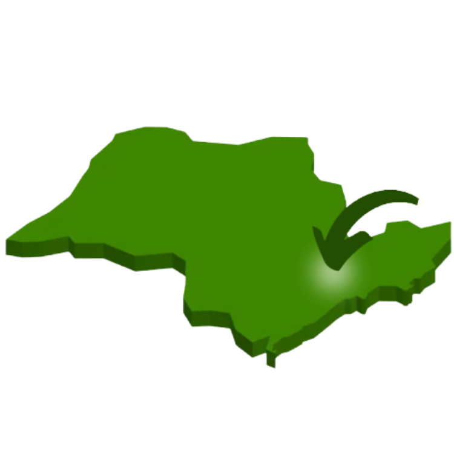
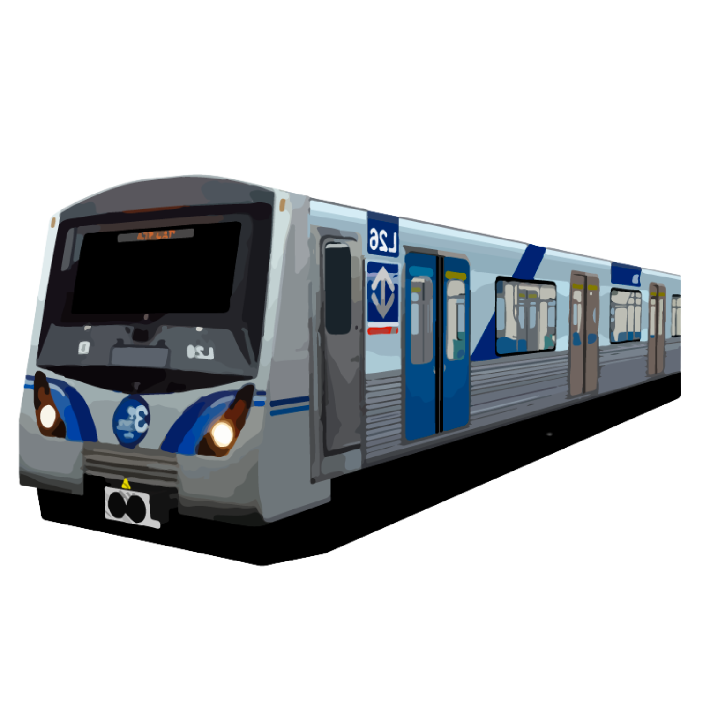

Localização
Localizada na região Metropolitana de São Paulo,
Osasco é a cidade que mais se destaca na Zona Oeste por
diversidade de bares e restaurantes.
Seus limites são a capital paulista a norte,leste e sul, Cotia a sudoeste, Carapicuíba e Barueri
a oeste e Santana de Parnaíba a noroeste. Conheça nosso mapa
encontre os melhores pontos aqui
Estações de Trem
A cidade de Osasco oferece 2 estações, facilitando a locomoção de todos seus habitantes. As estações de trem devem assumir novas funções com o intuito de se tornarem base para novos modelos de negócio, com o objetivo de melhorar a qualidade de vida aos passageiros. A evolução na infraestrutura de comunicação é imprescindível para permitir uma série de benefícios aos usuários e operadores dos terminais.
O local pode utilizar a internet para ajudar a manter os passageiros informados, conectados e entretidos com conexões wi-fi. Ao mesmo tempo, podem ser coletados dados de usuários para verificar fluxos de movimento em tempo real e a elaboração de melhores planos de deslocamento dentro dos terminais, inclusive com ações preditivas.


Centro de Osasco
Centro mais visitado da região, contando com centenas de lojas e diversos restaurantes, um dos maiores contribuintes para a economia local. Destaca-se por ser um lugar de lazer e entretenimento para todas as faias etárias.
É habitual que as pessoas façam uma visita ao centro como uma saída ou em passeio, aproveitando para realizar compras, almoçar ou jantar, ir ao cinema, etc.